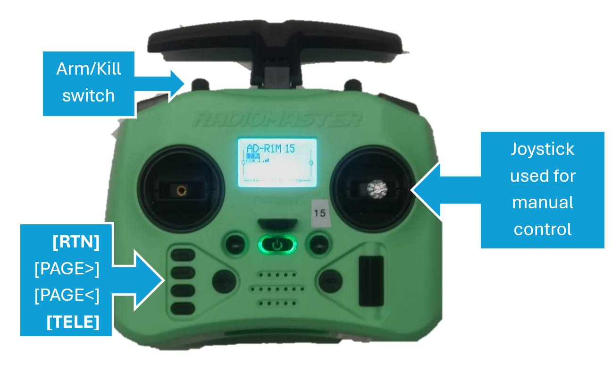
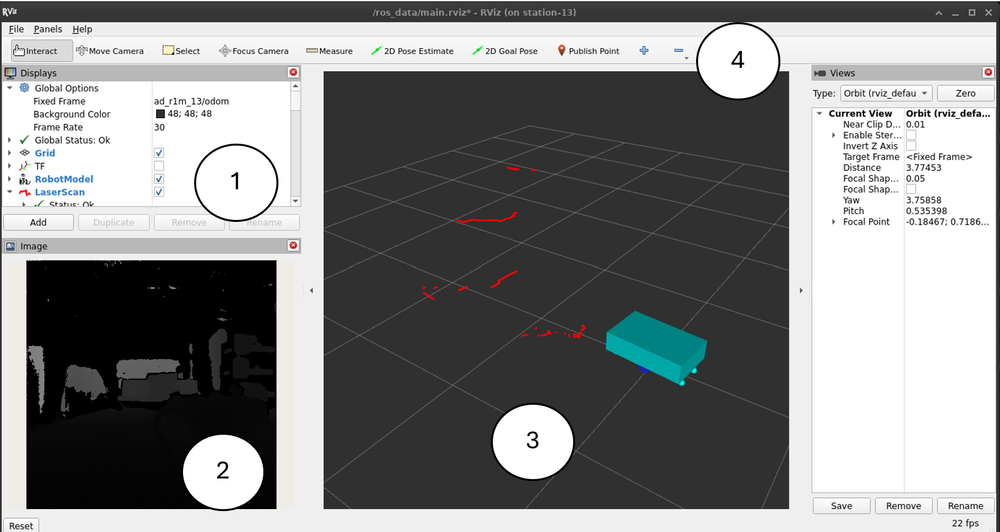

AD-R1M Quick Start Guide
This guide will help you power on, connect to, and operate the AD-R1M robot for the first time.
Important
First-Time Setup Required?
If your SD card is not pre-flashed or you need to configure the robot for the first time, complete these steps first:
SD Card Setup - Flash the ADI Kuiper2 image to your SD card
First Boot Configuration - Configure hostname, WiFi, firmware, and motor tuning
See the software-guide for complete installation instructions.
Power On

Press the gray latching button to engage the battery cut-off relay
Press and hold the gray momentary button (~1s) to start the robot electronics
Wait for the LED ring to turn solid green (~60 seconds)
Time |
Pattern |
Meaning |
|---|---|---|
~5s |
▄ ▄▄▄ ▄ ▄ |
Linux boot started |
~45s |
▄ ▄ ▄▄▄ ▄ |
Bringup script starting |
~60s |
Solid green |
System ready |
Note
On boot, the robot automatically starts the motors, sensors, and RC teleop nodes. Once the LED turns solid green, you can immediately control the robot using the RC handset.
Remote Control (RC)

Step 1: Verify Connection
Press [RTN] to return to the home screen. Look for the wireless “bars” icon indicating connection.

Radio connection status: disconnected (left) vs connected (right)
Step 2: Check Telemetry
Press [TELE] to view the telemetry screen. RxBt should display the battery voltage (e.g., “12.3V”).
Warning
Do not let battery voltage drop below 9V during operation.
Step 3: Arm the Robot
Move the arm switch (SA) to the “ARMED” (down) position. The robot should shake slightly to confirm.

Arm switch positions: OFF (up) = safe, ARMED (down) = active
Step 4: Drive
Use the right control gimbal:
Forward/Back: Stick up/down
Turn: Stick left/right
Stop: Release to center
For initial RC setup and binding the receiver, see First Boot Configuration.
For RC troubleshooting, see Remote Control Issues.
Connect via SSH
For advanced usage, debugging, or running different operational modes, connect to the robot via SSH.
SSH into the robot:
ssh analog@ad-r1m-0.localHostname: Replace
ad-r1m-0with your robot’s hostnameCredentials:
analog/analog
View running services (optional):
docker compose ps
Alternative Bringup Scripts
The default boot configuration starts radio teleop mode. To use different modes, stop the current stack and start a different one:
# Stop current services
docker compose down
# Start a different mode
./bringup_mapping.sh
Script |
Control Mode |
Description |
|---|---|---|
|
Radio |
Manual teleoperation with RC handset (default) |
|
Keyboard |
Development/testing without radio |
|
Radio + SLAM |
Create maps of new environments |
|
Radio + Nav2 |
Autonomous navigation in mapped environment |
|
Radio + Nav2 |
Autonomous navigation without pre-existing map |
For detailed bringup configuration options, see software-guide.
Keyboard Control
For development without the RC handset:
Start core services:
./bringup_keyboard.shIn a new terminal:
./teleop.shPress
pto arm, then use keyboard to drive
Controls: u i o q/z: speed ±10%
j k l p: arm | r: disarm
m , . CTRL-C: quit
Visualize with RViz
View robot data from your host PC. For complete setup instructions including ROS 2 installation, see software-guide/ros2-getting-started.
Quick Start (if ROS 2 and Zenoh RMW are already installed):
cd platform/common/scripts
./start_rviz.sh 0

Next Steps
Now that your robot is operational, explore these capabilities:


{kind=link}
{kind=link}
Create a map: See Mapping with SLAM Toolbox
Navigate autonomously: See Autonomous Navigation with Nav2
Understand the architecture: See software-guide/ros2-architecture
Troubleshoot issues: See troubleshooting